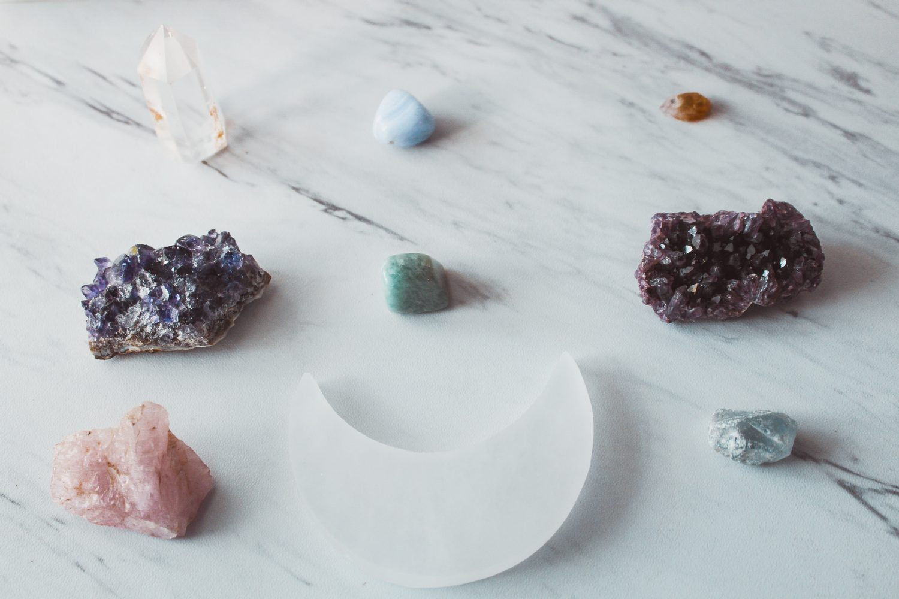
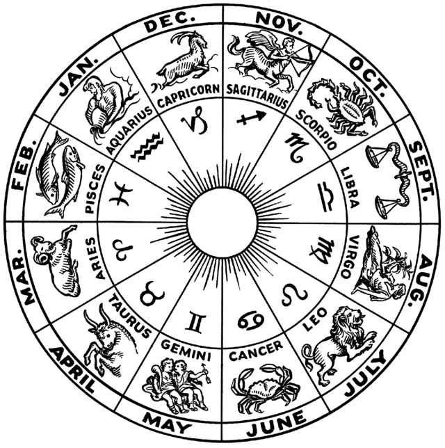
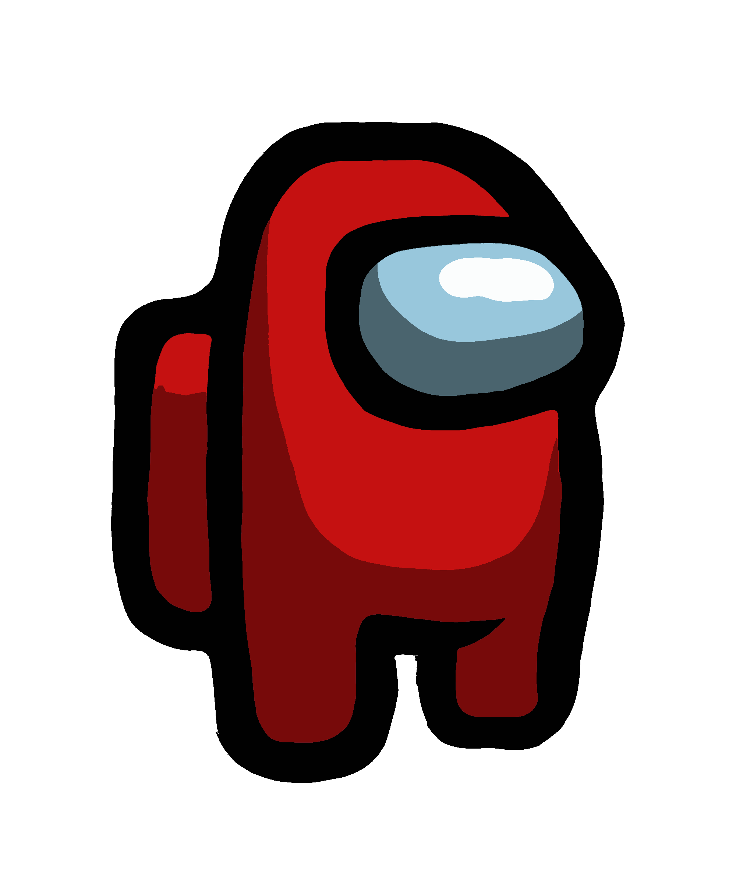
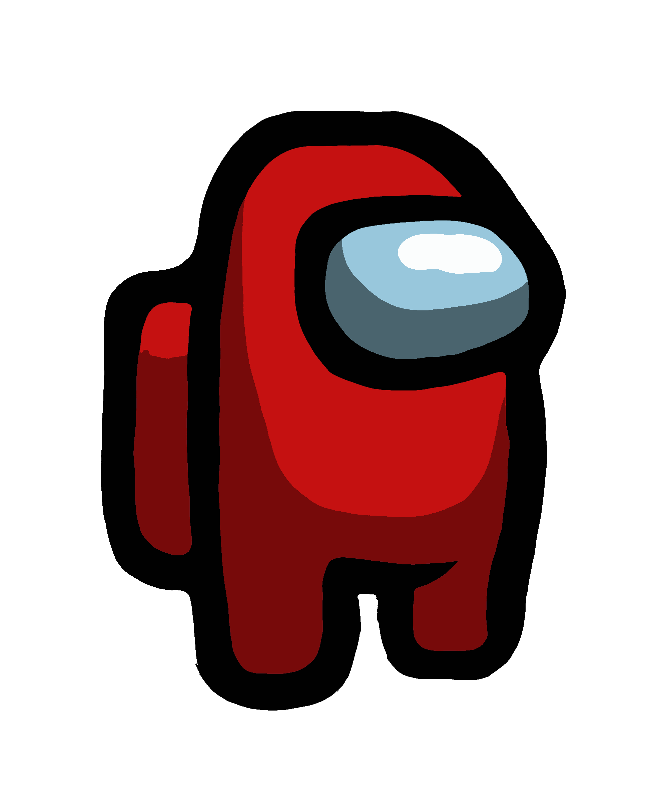

Když pracujeme s krystaly a minerály, tak po celou dobu absorbují negativní energie a tím se mění jejich vibrační frekvence. Je to jako když hrajete na kytaru. Poté co jste na ni nějaký čas hráli, ji musíte znovu naladit, abyste ji dostali zpět do dokonalého naladění. Totéž platí i pro vaše náramky, přívěšky, tromly a surové kameny z minerálů. Po celou dobu vám přináší energii a spolupracují s vámi. Abyste jim však pomohli zpět do původního stavu, musíte je očistit a nabít.
Největší sílu načerpají kameny nabité za Úplňku, jelikož světlo Luny je úplné. Kameny se dávají nabít přes noc, kdy načerpají největší sílu a světlo Měsíce je úplné. Před nabitím kameny omyjte vlažnou vodou a usušte! Poté položte nejlépe do misky z přírodního materiálu a nechte venku na přímém měsíčním světle, ale přesvědčte se, že na ně nebude pršet. V případě, že nemáte možnost je nechat nabít venku, postačí je ponechat blízko okna a nechat roztažené rolety. Pro dobití postačí pouze jedna noc. Světlo z Měsíce bude velmi silné i dva dny po Úplňku, proto máte dostatek času pro nabití všech vašich šperků. Ale možná nabudete dojmu, že jste jejich energii naprosto vyčerpali a zaslouží si dobít více jak jednu noc. To už záleží na vás.
Zvěrokruhem, též zvířetníkem nebo zodiakem , je myšlený pás na nebeské sféře táhnoucí se symetricky podél ekliptiky. V tomto pásu se při pohledu ze Země pohybují všechny známé planety sluneční soustavy (včetně později objevených – Uranu a Neptunu; trpasličí planetaPluto se může na obloze objevit i mimo zvířetník). Astrologové rozdělili před třemi až čtyřmi tisící lety zvířetník na 12 stejných obdélníkových dílů o délce po 30°, které nazvali zvířetníková znamení. Znamení zvěrokruhu, které odpovídá určitému datu a času, je odvozeno od polohy Slunce na zvěrokruhu v toto datum a čas. Výchozím bodem zvěrokruhu (začátkem prvního znamení) je jarní bod a znamení Beran. Zvířetníková znamení jsou pojmenována pozvířetníkových souhvězdích, s nimiž se původně kryla. Od dob Hipparcha se zvířetníková znamení v důsledku precese zemské osy posunula od zvířetníkových souhvězdí zhruba o jedno

 
